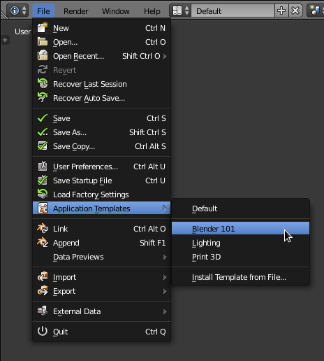
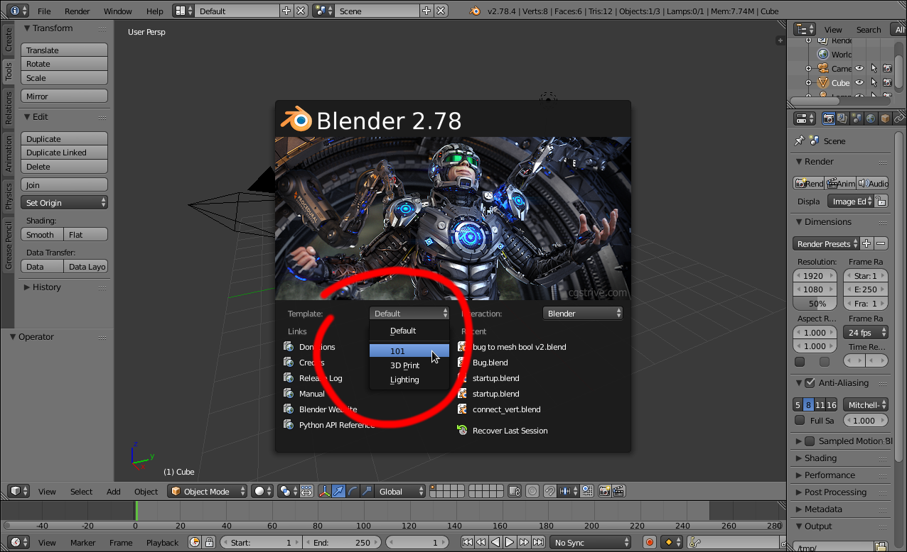

应用模板¶
用法¶
应用模板功能让用户能够定义可重复利用的配置，选中之后即可替代默认配置，无需另外安装Blender或者覆盖个人设置。

{kind=link}
从文件菜单选择模板.

{kind=link}
从启动画面选择模板。
用户可以在启动画面或者文件菜单选择应用模板 (如上图) 。
如果无法找到模板，启动画面不会显示该菜单。
可以使用文件菜单安装新的应用模板。
如果用户需要重启Blender后仍然使用当前应用模板，可以保存用户设置。
动机¶
有些时候，写一个简单的脚本或者插件不足以解决问题，盼着有人可以帮忙替换掉用户设置和启动文件，安装脚本并修改键位映射。
应用模板的用意在于帮助用户快速切换到自定义配置，而无需破坏已存在的设置和安装。
这意味着用户可以在Blender的基础上构建属于自己的 应用 ，并且容易分发。
细节¶
应用模板需要定义自身的：
- 启动文件
- 加载模板后的默认文件。
- 用户设置
只会用到模板中的某些用户设置：
- 主题。
- 插件。
- 键位映射。
- 视窗照明.
- 启动画面
- 模板可以使用自定义启动画面图像。
- Python脚本
模板可以与其他脚本一样访问功能，典型的操作包括：
- 修改和替换部分用户界面。
- 定义新的菜单、键位映射和工具。
- 自定义模板特有插件路径。
模板也有自己的用户配置，所以使用模板不会覆盖默认的启动文件。
目录布局¶
模板文件可以放在 scripts 目录下两个位置之一。
- 模板位置:
{BLENDER_USER_SCRIPTS}/startup/bl_app_templates_user{BLENDER_SYSTEM_SCRIPTS}/startup/bl_app_templates_system
用户配置保存在其子目录。
- 没有模板：
./config/startup.blend./config/userpref.blend- 有模板：
./config/{APP_TEMPLATE_ID}/startup.blend./config/{APP_TEMPLATE_ID}/userpref.blend
更多关于脚本和配置位置的细节见 配置目录 。
模板内容¶
应用模板可以配置以下文件，不过这是可选的。
startup.blend- 改模板的初始文件.
userpref.blend模板的初始用户设置文件。
(如前文所述，这仅仅是用户设置的子集).
splash.png,splash_2x.png启动画面会覆盖Blender的默认作品(不包含标题文字)。
必须是
501x230或者1002x460(用于HiDPI显示器)。__init__.py- Python脚本必须包含
register与unregister方法。
Note
自带的blend文件 startup.blend 和 userpref.blend 视作 初始设置 ，且不会被覆盖。
用户在使用模板时可以保存自己的启动文件/用户设置，这会覆盖原文件。
与 恢复初始设置 一样，用户可以从文件菜单使用 加载模板初始设置 加载模板初始设置。